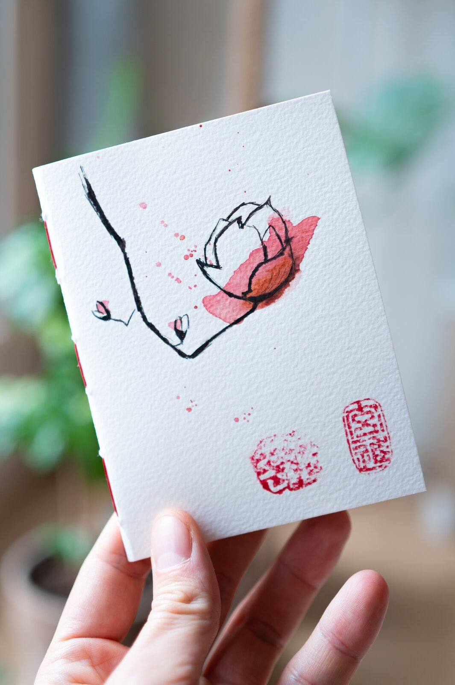

Lotus, No. 002
"Painted in February, on the same week the first plum blossoms came out along the Han."
연꽃 — 두 번째 에디션
The cover
A branch of plum blossom over a red lotus.
Ink lines first. Then watercolour. Then the seal — last, while the paint is still drying.
The seal
Vermilion, hand-stamped.
Cut from boxwood in 2024, in a small shop in Insadong. The chop is the same on every notebook from this studio.
The binding
French waxed linen, stitched by hand.
Three signatures. Forty pages. The same way every notebook leaves the studio.
The paper
Iroful 75gsm. Fountain-pen forgiving.
From Sakae, in Tokyo. No feathering. No bleed-through. The same paper on every page.
Edition
7/20
Each design is painted in a run of twenty, hand-numbered. Once they are gone, the painting is retired.